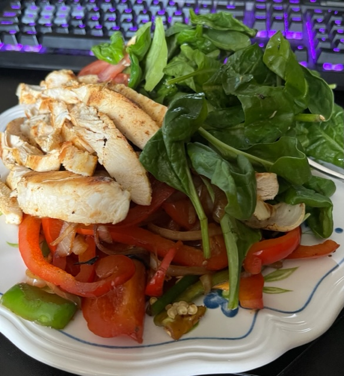

Back to Homepage
Back to Recipes
Lasagna

Description:
Alright, so this one I conjured up myself. It's so easy to make and it not only taste good but it's good for you! (Well, all of these recipes are healthy but whatever, you get it).
Ingredients:
- 1 medium size chicken breast
- 2 cups of baby spinach
- Half of a red tomato
- Half of you favorite colored bell paper
- Half of a large white onion, peeled (duh)
- 1 sliced jalapeno
- Salt and pepper
- Some homemade salsa (spicy is better)
Steps:
- Cut chicken into halves (hamburger way, not hotdog)
- Add some seasoning to your chicken and slap it on a lightly-oiled pan
- Oh yeah, turn that heat on! Let the pan get hot (It's good for the chicken)
- While your chicken is cooking, slice your onion and bell pepper into slivers/fajita slices
- You do the same for the jalapeno and the tomato
- Once your chicken is cooked, chop it up into slices
- Either on the same pan or a new pan, saute your onion, bell pepper and jalapeno
- Saute the veggies until they are golden brown, where you'll then add some salt & pepper
- Place your spinach, tomato, chicken and fajitas into a bowl
- Add some of your favorite homemade salsa on top and enjoy!